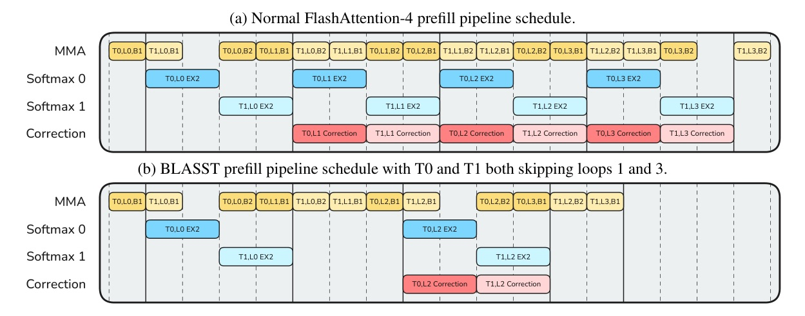
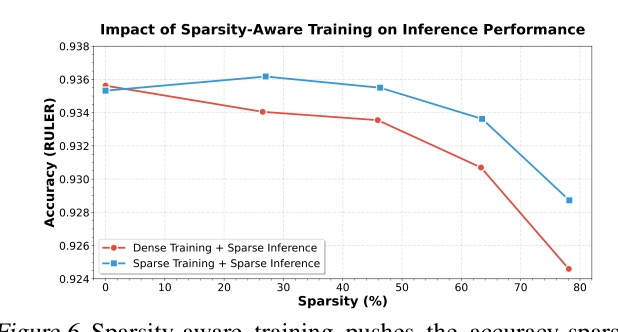

BLASST: Dynamic BLocked Attention Sparsity via Softmax Thresholding
A one-threshold sparse-attention gate that reuses FlashAttention online-softmax statistics to skip negligible blocks in both prefill and decode.
BLASST makes sparse attention feel like a kernel flag, not a new model.
FlashAttention optimized memory traffic, but it still computes dense attention.
- Long-context LLMs push attention into the dominant latency and memory bottleneck; sequence lengths now reach 128K to 1M tokens.
- FlashAttention improves tiling and kernel fusion, but the full QKT attention matrix is still evaluated.
- Sparse methods promise relief, yet practical deployment often gets blocked by pre-computation, retraining, phase-specific support, or missing modern-GPU kernels.
BLASST positions itself as the only method in the comparison with all four deployment boxes checked.
| Method | Prefill | Decode | No training | No pre-compute |
|---|---|---|---|---|
| H2O / SnapKV | no | yes | yes | yes |
| MInference | yes | no | yes | no |
| XAttention | yes | no | yes | no |
| SpargeAttention | yes | no | yes | no |
| BLASST | yes | yes | yes | yes |
The comparison is not just accuracy; it is whether the method can sit inside TensorRT-LLM / FlashInfer without an extra selection pass.
The skip condition is a softmax bound, evaluated at block granularity.
- FlashAttention already keeps row-wise running maxima during online softmax.
- BLASST adds one threshold comparison per block using local block maximum and running maximum.
- If the block is far below the current maximum, its post-softmax contribution is bounded and treated as negligible.
The gate is cheap because it does not predict importance; it observes a statistic the kernel already had.
- Ideal score: relative to the global row max.
- Tractable proxy: compare to the running max while streaming blocks.
- Kernel decision: use the block-local max, so a whole tile can be skipped.
A skipped block removes different costs depending on the phase.
Prefill · compute-bound
- Skip exp / softmax CUDA-core work.
- Skip BMM2: attention weights times Value block.
- Keep V prefetching predictable because memory bandwidth is not the bottleneck.
Decode · memory-bound
- Skip loading Vj from HBM for pruned blocks.
- Batch several K products, then issue only surviving Value loads.
- For MLA decode, also skip softmax work when compute-bound.
λ is not portable; target sparsity is the real control knob.
- Accuracy is stable until roughly 60-70% observed sparsity, then drops sharply.
- To reach 75% sparsity, the paper reports λ≈1e-4 at 8K context but λ≈1e-5 at 64K.
- The calibration pass fits λ·L as a function of target sparsity S, so runtime can choose an accuracy/speed point.
Fixed thresholds drift across context length; calibrated λ=a/L stays near target.
| Method / target | 4K | 8K | 16K | 32K | 64K |
|---|---|---|---|---|---|
| Fixed λ=1e-3 @ 50% | 23.09 | 37.92 | 52.38 | 65.72 | 74.63 |
| Calibrated λ=a/L @ 50% | 54.20 | 49.70 | 52.20 | 46.96 | 48.75 |
| Fixed λ=3e-3 @ 70% | 42.35 | 57.54 | 69.83 | 79.36 | 84.63 |
| Calibrated λ=a/L @ 70% | 67.99 | 74.65 | 73.64 | 72.54 | 74.63 |
Production takeaway: without calibration, the same threshold silently changes the accuracy regime as context grows.
In prefill, BLASST compresses the compute schedule by skipping softmax and BMM2.

- QKT still runs; the skip decision happens after block scores and maxima exist.
- The kernel hides predicate/VOTE/ATOMIC decision overhead behind existing work.
In decode, the point is not FLOPs first; it is avoiding unnecessary HBM Value loads.

- Naive conditional loading creates scoreboard dependencies after BMM1.
- BLASST batches K products, stores small score buffers, then fetches only V tiles that pass the gate.
At 50-75% sparsity, main task accuracy mostly stays within the dense neighborhood.
| Model / mode | RULER-32K | LongBench | MATH500 | AIME 2024 | GPQA |
|---|---|---|---|---|---|
| Llama-3.1-8B dense | 92.33 | 31.40 | 73.40 | 46.66 | 46.71 |
| Llama-3.1-8B BLASST 75% | 91.67 | 31.80 | 73.89 | 46.01 | 45.95 |
| Qwen3-8B dense | 91.90 | 33.60 | 95.87 | 75.00 | 61.21 |
| Qwen3-8B BLASST 50% | 92.08 | 35.10 | 96.23 | 76.50 | 61.56 |
The surprising part is not merely “no drop”: Qwen3 improves on MATH500 and AIME at 50% sparsity in this table.
Against prefill sparse baselines, BLASST keeps the best sparse accuracy while being easier to deploy.
| Method | RULER avg | LongBench overall | Deployment note |
|---|---|---|---|
| Dense Attention | 93.21 | 31.4 | reference |
| FlexPrefill | 87.72 | 25.7 | prefill only / compiler pattern |
| MInference | 84.15 | 31.2 | pre-computed importance |
| XAttention | 92.44 | 30.6 | proxy score / prefill only |
| BLASST ~50% | 92.87 | 31.8 | one threshold; no pre-pass |
On Qwen3-8B reasoning/generation tasks, BLASST ~50% is slightly above dense average in the reported table.
| Method | RULER-32K | LongBench | MATH500 | AIME | LCB | GPQA | Avg |
|---|---|---|---|---|---|---|---|
| Dense | 91.90 | 33.60 | 95.87 | 75.00 | 53.83 | 61.21 | 68.57 |
| Quest | 56.23 | 30.30 | 94.18 | 71.50 | 52.17 | 60.12 | 60.75 |
| RocketKV | 87.89 | 30.60 | 95.88 | 73.54 | 53.10 | 60.50 | 66.91 |
| BLASST ~50% | 91.55 | 33.90 | 96.23 | 76.50 | 54.15 | 61.51 | 68.97 |
The headline speedups are real kernel numbers on B200/H200, measured against FlashAttention-3 BF16 baselines.
| GPU / phase | ~50% sparsity | ~70% sparsity | highest listed |
|---|---|---|---|
| B200 prefill | 1.33x @ 49.2% | 1.52x @ 71.9% | 1.77x @ 94.2% |
| B200 decode | 1.25x @ 46.7% | 1.48x @ 73.2% | 1.79x @ 92.0% |
| H200 prefill | 1.27x @ 49.2% | 1.52x @ 71.0% | 1.84x @ 92.0% |
| H200 decode | 1.20x @ 43.7% | 1.40x @ 70.5% | 1.56x @ 87.5% |
0% sparsity is 0.96-1.00x baseline, which is the paper’s evidence that the skip-check overhead is mostly hidden.
End-to-end serving gains are smaller than raw kernel gains, but still visible.

- Input sequence length averages about 10K; output length averages 6.
- The paper reports about 1.1x TTFT and TPOT speedups with only marginal LongBench V1 accuracy drop.
At 200K context, natural sparsity becomes the point: dense attention is most painful exactly where BLASST has room.
| Context / mode | Prefill sparsity | Decode sparsity | Accuracy |
|---|---|---|---|
| 16K dense | 0% | 0% | 0.897 |
| 16K BLASST prefill | 64.1% | 0% | 0.904 |
| 16K BLASST P+D | 64.1% | 48.4% | 0.882 |
| 200K dense | 0% | 0% | 0.850 |
| 200K BLASST prefill | 57.5% | 0% | 0.841 |
| 200K BLASST P+D | 57.5% | 40.8% | 0.838 |
The method survives MLA because the dependency is tiled online softmax, not a specific KV layout.
| DeepSeek-R1 NVFP4 sparsity | GPQA Diamond | MMLU Pro | LiveCodeBench |
|---|---|---|---|
| 0% | 0.7071 | 0.8302 | 0.5735 |
| 50% | 0.7121 | 0.8283 | 0.5691 |
| 60% | 0.7109 | 0.8266 | 0.5677 |
This matters because decode can be compute-bound under MLA; BLASST can skip softmax work in addition to memory traffic.
The optional training path improves the Pareto frontier, but the paper’s main claim does not rely on it.

- Forward pass skips blocks with the same threshold rule used at inference.
- Skipped blocks naturally receive no gradients, encouraging attention mass to concentrate in surviving blocks.
- Reported improvement: up to 1.7x reduction in accuracy degradation at target 50-75% sparsity.
One scalar threshold does not mean uniform pruning.
- Figure 7 shows substantial sparsity heterogeneity across layers and heads.
- BLASST gets that adaptation without top-k head selection or explicit pruning schedules.
- This is why a simple global threshold can behave less crude than it sounds.
The bottleneck is reduced, not deleted.
- QKT is still computed before the skip decision; BLASST does not remove BMM1.
- Accuracy is stable only up to a regime: beyond roughly 60-70% observed sparsity, degradation steepens.
- Prefill currently keeps Value loads for pipeline predictability; future memory-bound regimes may need a different prefill design.
- Tile row reordering is dataset-dependent and mostly negligible in the appendix experiment.
Why this paper is stronger than a normal sparse-attention idea paper
- Deployability is part of the method: no proxy model, no pre-pass, no retraining requirement.
- Kernel design follows phase bottlenecks: prefill removes compute; decode removes HBM traffic.
- Calibration is first-class: production cannot rely on a fixed λ across 4K-64K contexts.
- Integration evidence exists: TensorRT-LLM and FlashInfer are named as implementation targets.
Headline result from the abstract
Preserving benchmark accuracy, we demonstrate a 1.52x speedup for prefill at 71.9% sparsity and a 1.48x speedup for decode at 73.2% sparsity on modern GPUs.
在維持 benchmark 準確度的前提下，BLASST 在現代 GPU 上於 71.9% sparsity 達到 prefill 1.52x，在 73.2% sparsity 達到 decode 1.48x。Abstract p.1
Why the API surface stays small
This simple pruning rule requires only a single comparison per block and seamlessly integrates into existing attention APIs, requiring only a single scalar threshold input.
這個 pruning 規則每個 block 只需要一次比較，且只在既有 attention API 加入單一 scalar threshold。Introduction p.2
Why prefill and decode are designed differently
The Value blocks remain loaded from HBM in the prefill kernel because: (1) memory bandwidth is not the bottleneck, (2) the prefetching pipeline benefits from predictable memory access patterns, and (3) the latency of conditional Value loading would exceed the savings.
prefill 仍載入 Value block，因為瓶頸不是記憶體頻寬；這也說明 BLASST 的 kernel 設計不是盲目跳過所有東西，而是照 phase bottleneck 調整。§4.1 p.6
BLASST 的重點不是 sparse attention 新奇，而是把 sparse attention 做成可上線的 kernel path。
明天輪轉：模型壓縮 / 效率（Quantization, Distillation, Pruning）。